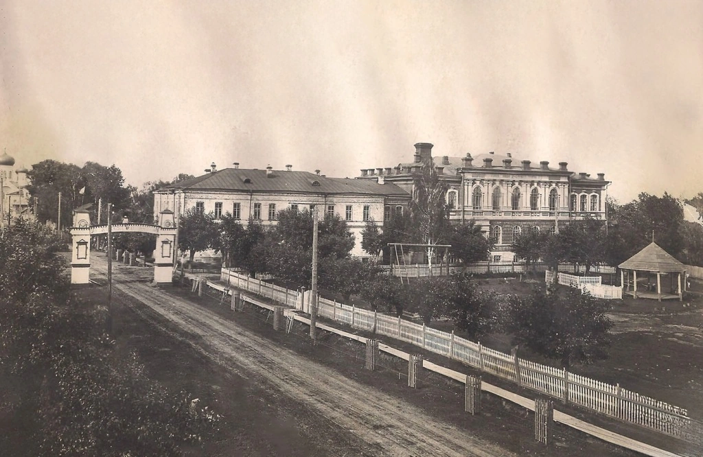
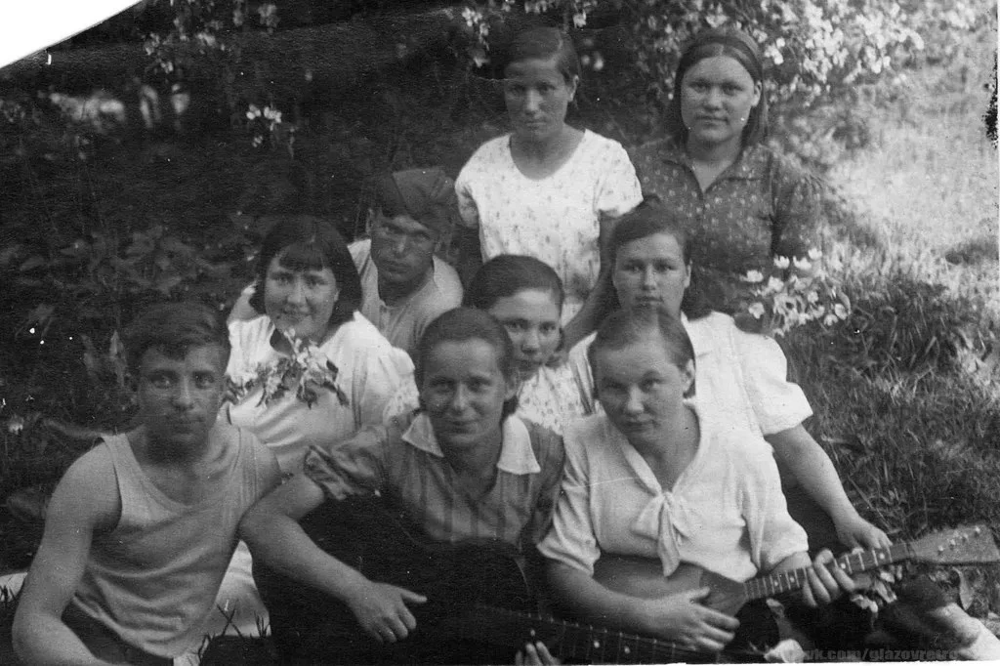
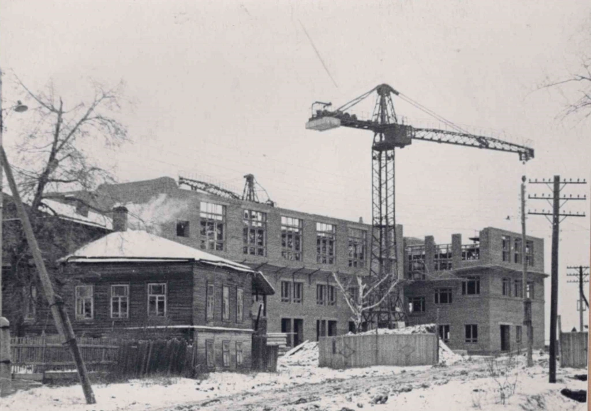
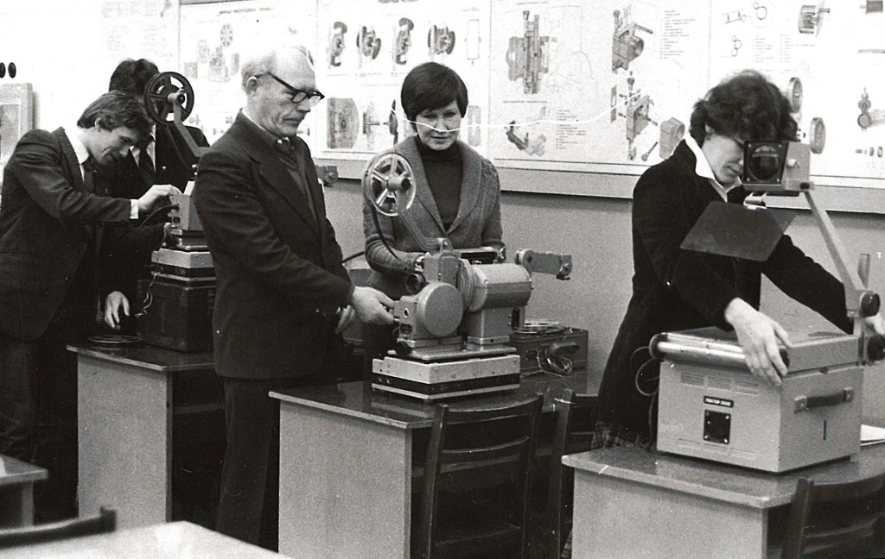
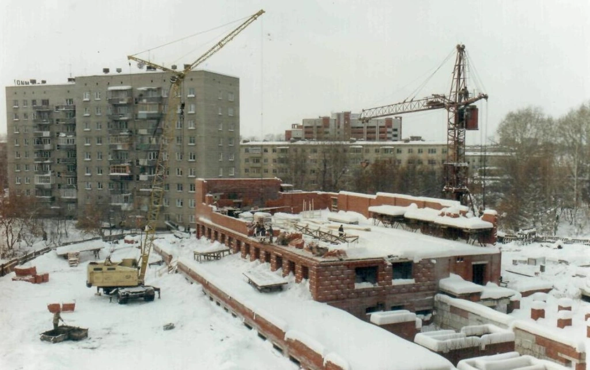
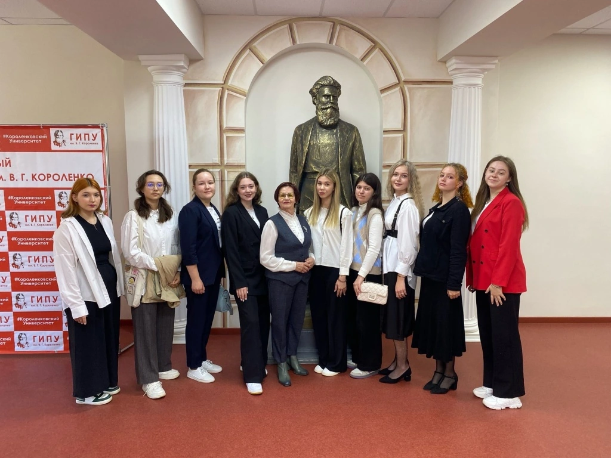
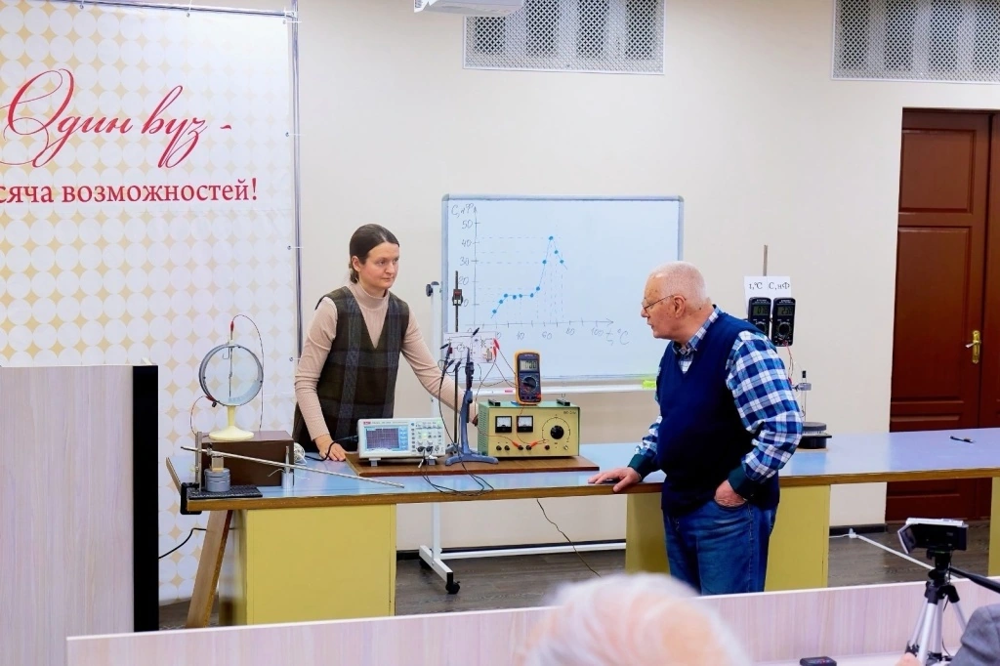
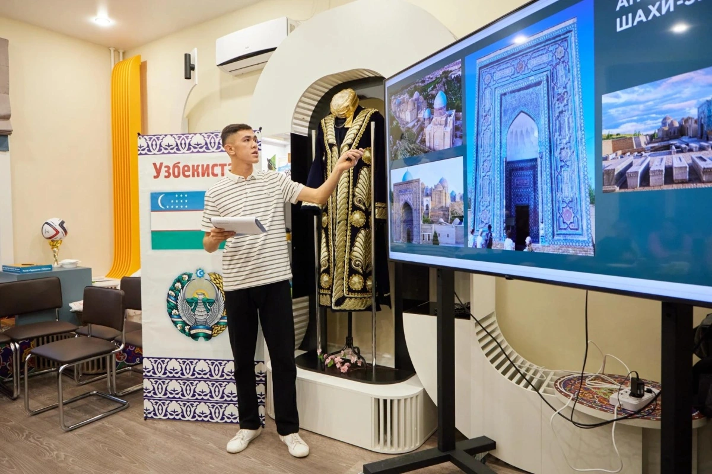
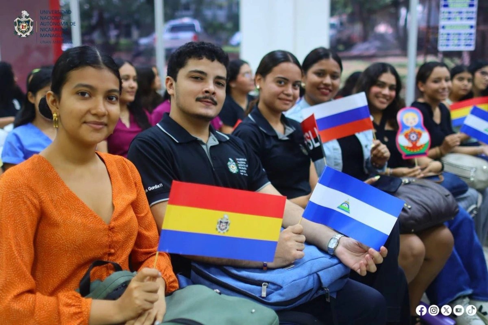
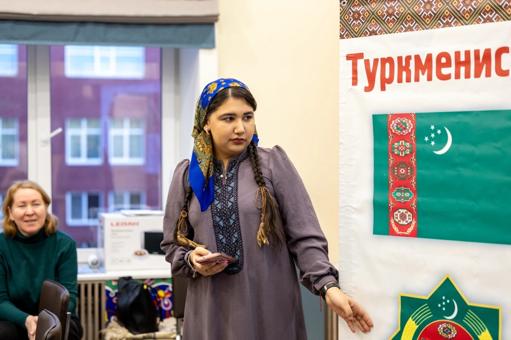

Глазовский государственный инженерно-педагогический университет имени В. Г. Короленко
Время
становиться.
Университет в Глазове, где с 1939 года учатся будущие учителя, инженеры, филологи и историки.
01Университет
Что просто слушают — забывают.В чём участвуют — становится тобой.
- 1939В Глазове открыт учительский институт — начало истории вуза.
- 1946Вузу присвоено имя Владимира Галактионовича Короленко.
- 1968В холле первого корпуса открыта скульптура писателя.
- 3факультета: естественнонаучного и инженерного образования, социальных коммуникаций и филологии, историко-педагогический.
02Направления
Выберите, куда
идти дальше.
Образование
Три факультета, дополнительное и инклюзивное образование, практическая подготовка, Технопарк и Кванториум.
- 01
Образование
Три факультета, дополнительное и инклюзивное образование, практическая подготовка, Технопарк и Кванториум.
Раздел «Образование» - 02
Наука
Направления исследований, инновационные проекты, гранты, патенты, аспирантура и Удмуртский научный центр РАО.
Раздел «Наука» - 03
Студентам
Профком, студенческие отряды, Международный клуб дружбы, воспитательная и социальная работа, электронная среда.
Раздел «Студентам» - 04
Университет
Сведения об организации, руководство и структура, документы, кампус, библиотека, учёный совет и история.
Раздел «Университет» - 05
Приёмная комиссия
Программы, сроки и условия поступления публикует приёмная комиссия на своём сайте.
Раздел «Приёмная комиссия»
03История
От первого снимка
до сегодняшнего дня.
Точка отсчёта
Здание Глазовского учительского института. Снимок 1930-х годов.

Точка отсчёта
У каждой большой истории есть место, с которого всё начинается. Этот снимок сохранил здание Глазовского учительского института — ещё до привычного нам облика университета.
История вуза началась в 1939 году. Сегодня этот кадр — возможность увидеть начало пути и почувствовать расстояние между поколениями.
Источник: официальный сайт ГИПУ
Между занятиями
Книги остаются за кадром. Здесь — берег Чепцы, гитара и люди, которых объединила студенческая жизнь. У университетской истории всегда было человеческое лицо.
С гитарой — Августа Павловна Чернова, в будущем учитель школы № 2 Глазова. Имя и датировка приведены по официальной летописи университета.
Источник: официальный сайт ГИПУ
Пространство роста
За любым привычным пространством — время, когда его только строили. Архив сохраняет этот момент: ещё открытые конструкции, движение и ожидание нового.
Снимок опубликован в разделе истории ГИПУ. Точная дата и автор фотографии в источнике не обозначены; мы не присваиваем кадру вымышленный год.
Источник: официальный сайт ГИПУ
Думать. Пробовать.
Знание становится своим, когда начинаешь действовать. В лаборатории и в аудитории рождается та самая связь между вопросом и собственным открытием.
Кадр из официальной летописи ГИПУ. Дата съёмки и имена участников в подписи к изображению не указаны.
Источник: официальный сайт ГИПУ
Университет растёт
Университет — это не только стены. Но именно новые пространства дают место новым встречам, исследованиям и будущим профессиям.
Фотография опубликована на странице истории университета. Точная датировка кадра требует уточнения у правообладателя.
Источник: официальный сайт ГИПУ
Имя, которое рядом
В 1946 году вузу присвоили имя Владимира Галактионовича Короленко. В холле первого учебного корпуса писатель будто встречает каждого, кто входит.
Бронзовую скульптуру в холле открыли в 1968 году. Дата относится к установке скульптуры, а не к этой фотографии.
Источник: официальный сайт ГИПУ
Живое знание
Сложные вещи становятся понятнее, когда рядом человек, умеющий показать их красоту. Университетская наука продолжается в диалоге, опыте и любопытстве.
Имена участников и год съёмки приведены по официальной истории университета.
Источник: официальный сайт ГИПУ
Больше, чем учёба
Узнавать друг друга — тоже учиться. В ГИПУ прошла встреча, посвящённая культуре Узбекистана: ещё одна история о людях, которые создают университет каждый день.
Материал опубликован в новостях официального сайта ГИПУ. Фотография используется в локальной демонстрации с указанием источника.
Источник: официальный сайт ГИПУ
Мир становится ближе
Университетская история выходит за пределы кампуса. ГИПУ представил образовательные возможности России на фестивале русского языка в Никарагуа.
Название события и изображение — с официального сайта университета. Актуальные сведения о международной работе доступны в официальных разделах ГИПУ.
Источник: официальный сайт ГИПУ
Время становиться
У этой плёнки нет последнего поколения. За каждым кадром — люди, которые однажды выбрали свой путь. Следующая история может стать твоей.
Познакомься с университетом и узнай об условиях поступления на официальном сайте приёмной комиссии.
Источник: официальный сайт ГИПУ
04Новости
240 историй
за 63 дней.
Листайте, чтобы лететь сквозь новости. Нажмите на карточку, чтобы открыть.
Имени В. Г. Короленко — с 1946 года
240 последних новостей университета сложились в портрет писателя. Листайте: портрет рассыплется, и вы полетите сквозь новости.
001 / 240
Подготовлен проект постановления об установлении единого образца удостоверения, подтверждающего статус учителя
Новости
- Подготовлен проект постановления об установлении единого образца удостоверения, подтверждающего статус учителя
- В ГИПУ прошла встреча «Солнце в пиале», посвященная культуре Узбекистана
- «Книжный компас» для подростков: в ГИПУ прошел подкаст о современной литературе
- Сергей Кравцов обсудил с директорами школ вопросы формирования мировоззрения у учеников
- Магистрант ГИПУ представила опыт в сфере инклюзии на форуме в Нижнем Новгороде
- В Москве стартовал Всероссийский студенческий форум педагогических вузов - 2026
- ГИПУ представил образовательные возможности России на фестивале русского языка в Никарагуа
- «Там, где оживают легенды Востока»: в ГИПУ прошёл вечер, посвящённый Туркменистану
- Единые государственные учебники по предмету «Духовно-нравственная культура России» включены в федеральный перечень
- Поздравляем с юбилеем Ирину Николаевну Позерт
- Cтуденты и преподаватель ГИПУ получили поддержку Альфа-Банка
- «Слово о полку Игореве» в рисунках и символах: преподаватель ГИПУ провела креативный урок в Бишкеке
- Александр Реут рассказал о стандарте дошкольного образования в рамках деловой программы Всероссийского конкурса «Родная игрушка»
- Форум педвузов в Москве объединит 250 лучших студентов-педагогов со всей страны
- Студенты ГИПУ победили в Первенстве Глазова по ночному ориентированию
- Первокурсники ГИПУ открывают для себя мир творчества
- Поисковики ГИПУ привезли награды со слёта «Никто не забыт»
- «Наука 0+» в ГИПУ: 26 событий, более 300 участников и путешествие по научной вселенной
- «Южный ветер» — в числе лучших отрядов вожатых России
- От поющих песков до космодрома Байконур: в ГИПУ раскрыли «Тайны Великой степи»
- Студенты ГИПУ раскрыли диалектное богатство Удмуртии
- Опыт ГИПУ по работе с иностранными студентами представили на федеральном уровне
- Будущие воспитатели провели первые занятия для дошколят
- Поздравляем с юбилеем Наталию Николаевну Закирову
- В ГИПУ создали программу для учителей монгольских школ с изучением русского языка
- Сотрудники ГИПУ прошли программу повышения квалификации в РУДН и обсудили международное сотрудничество
- «Наука 0+» в ГИПУ объединила малышей, школьников и студентов
- «Золотая лекция» от учёного ГИПУ посвящена удмуртской мифологии
- В столице Никарагуа открылся новый Центр открытого образования ГИПУ
- В ГИПУ прошла встреча семейных пар «От поколения к поколению»
- Дмитрий Чернышенко: Единый день открытых дверей в кластерах СПО состоится в более чем 1,7 тыс. колледжей и техникумов «Профессионалитета»
- 340 докладов, 12 миллионов рублей и единогласное переизбрание: в СНО ГИПУ подвели итоги года
- Волонтёры ГИПУ устроили праздник для ребят из детского дома
- Учащихся колледжей и педвузов приглашают присоединиться к Российской национальной премии «Студент года»
- Студентка ГИПУ победила в региональном этапе проекта «Первый студенческий»
- На пересечении культур: в ГИПУ прошёл мастер-класс по русскому, английскому и испанскому языкам
- Студент ГИПУ Вадим Алешкевич о пути от добровольца СВО до педагога
- От знакомства с космосом до собственных спутников на орбите
- ГИПУ укрепляет сотрудничество с педагогическим сообществом новых регионов
- В ГИПУ прошёл федеральный педагогический интенсив «Лучшие образовательные практики»
- Первокурсники ГИПУ познакомились с историей вуза
- На «Госуслугах» родителей приглашают оценить организацию летнего отдыха детей
- В ГИПУ продолжается обучающая программа для студентов «Школа семьи»
- Более 5000 школьников посетили ГИПУ с начала учебного года
- Бойцы "Южного ветра" на Всероссийском форуме
- Свежий номер «Учебной физики»: от волчка в начальной школе до прибора для измерения эластичности артерий
- В ГИПУ стартовал фестиваль «Наука 0+»: более 100 участников за два дня
- Юбилей отмечает Люция Серафимовна Максимова
- Ветераны ГИПУ побывали на выставке ЧМЗ
- Сергей Кравцов представил плановое финансирование системы образования в проекте федерального бюджета на 2027–2029 годы
- Эксперт ГИПУ: «Воспитание и обучение невозможно разделить в детском саду»
- Ижевские школьники «примерили» профессию педагога
- ГИПУ на XI Всероссийской неделе охраны труда
- Новая учебная неделя в Короленковском университете началась с «Разговоров о важном»
- Золото и бронза: спортсмены ГИПУ выступили на традиционном пробеге в Глазове
- В ГИПУ прошли XI Есиповские чтения
- Впервые в Удмуртии: 12 школ и 174 ученика стали этнопедклассовцами
- Федеральный интенсив в ГИПУ имени В.Г. Короленко: транслируем наш опыт на всю страну
- Минпросвещения России обновит рабочие программы по ключевым школьным предметам в соответствии с ФГОС СОО
- Дмитрий Чернышенко: Президент дал нам все исчерпывающие поручения для старта работы по созданию национальных и суверенных прикладных ИИ-инструментов для науки и образования
- В ГИПУ стартовал «Календарь культур»
- Ректор ГИПУ вошла в экспертный совет грантового конкурса Движения Первых
- Творчество и традиции: в ГИПУ прошли мастер-классы по культуре народов России
- Ректор ГИПУ о тенденциях в сфере образования
- От студента-олимпиадника до кандидата наук
- Культурный диалог через творчество на фестивале «Время быть вместе»
- Посвящение в этнопедклассовцы: новый этап проекта ГИПУ
- Дмитрий Чернышенко и Сергей Кравцов рассказали о развитии системы дополнительного образования
- Учёные России и зарубежья обсудят роль педагога на «Есиповских чтениях» в ГИПУ
- Более 1 600 обращений поступило на линию психологической помощи «Школа доверия»
- 7 октября - день рождения Президента России Владимира Путина
- Олимпиада «Мой выбор» получила статус всероссийской
- Балезинские школьники победили в «Техно-квизе» в ГИПУ
- Студенты-музыканты ГИПУ поздравили педагогов программой «Перезагрузка»
- Иностранные студенты Удмуртии проверили знания о культурах мира в «Этноквизе»
- ГИПУ проводит Международный конкурс творческих работ «Моя семья - моя Родина»
- Фестиваль «НАУКА 0+» снова в ГИПУ: лекции, эксперименты, квизы и море открытий
- В ГИПУ стартуют курсы удмуртского языка
- Этнодиалог в ГИПУ: вузы Удмуртии объединили усилия для адаптации иностранных студентов
- В ГИПУ прошла первая Атомная лекция «Построй карьеру на ЧМЗ»
- Добро.Центр ГИПУ проводит сбор помощи для приюта животных
- Владимир Путин встретился с лауреатами и победителями профессиональных конкурсов Минпросвещения России
- «Разговоры о важном»: знакомство с университетом продолжается
- Дмитрий Чернышенко и Сергей Кравцов поздравили педагогов с Днем учителя
- Президент РФ Владимир Путин поздравил педагогов с Днем учителя
- Поздравление ректора ГИПУ Янины Чиговской-Назаровой с Днём учителя
- Поздравление Министра просвещения России Сергея Кравцова с Днём Учителя
- В ГИПУ состоялся Республиканский фестиваль дружбы народов «Время быть вместе»
- Отряды ГИПУ — на высоте: итоги XXVI фестиваля студенческих отрядов Удмуртии
- В ГИПУ открылся современный кабинет музыки
- В ГИПУ прошло заседание профсоюзного актива: приняты важные решения по поддержке работников
- Поздравление Президента Российский Федерации Владимира Путина с Днем среднего профессионального образования
- Научная библиотека ГИПУ получила учебно-методический комплекс «Русский город»
- Поздравление Министра просвещения Российской Федерации Сергея Кравцова с Днем среднего профессионального образования
- ГИПУ запускает межрегиональный конкурс эссе «Играй в будущее»
- ГИПУ на форуме «ТехноНаставники: от школы к индустрии» в Сколково
- Владимир Путин приветствовал участников Всероссийского форума классных руководителей и Первого форума директоров школ
- Один день — тысяча культур. Один университет — целый мир
- Татьяна Волкова — лауреат конкурса «Директор года России – 2026»
- В ГИПУ прошло родительское собрание для обучающихся в СПО
- В ГИПУ отметили День оружейника
- Студенческие отряды ГИПУ покорят Алтайский край
- ГИПУ на форуме «Моя инициатива в образовании»
- Профсоюзный лидер ГИПУ представила интересы преподавателей на всероссийском уровне
- В Минпросвещения России дан старт Большой учительской неделе
- В ГИПУ прошел хакатон инженерных классов
- День туриста отметили в Короленковском университете
- «Разговоры о важном» в Короленковском университете
- Хороводы, игры и русские традиции: в ГИПУ прошёл культурный интенсив
- В ГИПУ пройдёт Республиканский фестиваль дружбы народов «Время быть вместе»
- Самая в мире мирная - это наша профессия
- Поздравление Сергея Кравцова с Днём воспитателя и всех работников дошкольного образования
- 70 лет назад открылся факультет общественных профессий
- ДондыДор: где рождается дружба
- Пришло время сделать Твой ход!
- Открытый диалог о будущем образования: студенты ГИПУ обсудили лекцию Сергея Кравцова
- Участники Международного фестиваля молодёжи познакомились с ГИПУ и его проектами
- Студенты ГИПУ получили благодарственные письма от Администрации Глазовского района
- 150 человек написали Оружейный диктант в ГИПУ
- Слёт друзей зовёт в поход
- Студенты СПО Короленковского университета пишут ВПР
- ГИПУ приглашает на XI Есиповские чтения
- Поисковый отряд ГИПУ «Новый Феникс» удостоен медали В.С. Гризодубовой
- ГИПУ приглашает на «Литературный диктант»
- Студенты ГИПУ взяли серебро республиканских робототехнических соревнований
- Атомный диктант объединил студентов ГИПУ и сотрудников ЧМЗ
- В ГИПУ стартовала регистрация в «Школу семьи»
- 30 добрых дел от волонтёров ГИПУ
- Всероссийский форум «Большие смыслы» объединит в «Орленке» делегатов из более чем 80 регионов страны
- От Глазова до Бишкека: студенты ГИПУ смогут пройти практику в школах Киргизии
- ГИПУ - в новостях «Российского образования»: инженерные классы и зарубежные центры
- Выпускник ГИПУ Алексей Князев победил в номинации Всероссийского конкурса «Учитель года России – 2026»
- Новая учебная неделя в ГИПУ началась с линеек и Разговоров о важном
- «Сепычкар-2026»: 135 студентов, 12 километров и море эмоций
- Преподаватели ГИПУ — спикеры всероссийского форума «Педагоги России»
- Сборная ГИПУ - серебряный призёр спартакиады «Гвардия»
- Студия народного танца «Ромашка» победила на фестивале «Разгон»
- Прозрачно для всего мира: наблюдатели из 8 стран проверили выборы в ГИПУ
- ГИПУ открывает набор на программу переподготовки по инклюзивному образованию
- Поздравляем с юбилеем Любовь Сергеевну Кропачеву
- Дмитрий Чернышенко: Чемпионат высоких технологий – это площадка, где рождаются передовые решения для экономики будущего
- Сергей Кириенко и Сергей Кравцов дали старт Всероссийскому форуму «Время дошкольного образования»
- В ГИПУ проходит голосование на выборах депутатов Государственной Думы
- ГИПУ представил опыт подготовки учителей истории в Российской академии образования
- В ГИПУ прошёл «Техно-квиз» для будущих инженеров
- В ГИПУ пройдет Атомный диктант
- Участники МФМ делятся впечатлениями
- Студенты ГПК посетили лаборатории ГИПУ
- Ушел из жизни Олег Николаевич Леконцев
- Ректор ГИПУ переизбрана председателем Удмуртского отделения Общества «Знание»
- Студенты ГИПУ познакомились со стрелковым спортом Глазова
- Командир Штаба студенческих отрядов ГИПУ - лучший вожатый России
- Игорь Винокуров: «Атмосфера дружбы и открытости - то, чем запоминается фестиваль в Екатеринбурге»
- Поздравляем с юбилеем Татьяну Владимировну Пономареву
- Русский язык в Латинской Америке: новый учебный год стартовал!
- ТВЭЛ и ГИПУ - вместе делаем город лучше!
- Будущие металлурги - о профессии, которая делает страну сильнее
- Иностранные студенты ГИПУ привезли 6 медалей с фестиваля «На районе»
- Первокурсникам ГИПУ рассказали о стипендиях, сессии и правилах поведения
- Церемония открытия Международного фестиваля молодежи – 2026 объединила 11 тысяч зрителей
- Более 60 школьников Глазова начали новый учебный год в инженерных классах ГИПУ
- Интерактивный стенд Минпросвещения России открыли на Международном фестивале молодежи
- Студентка ГИПУ в финале конкурса «Голос единства России»
- Студенческие отряды ГИПУ — на «Академии Лиги вожатых»
- На Школе первокурсников выбрали Мисс и Мистера
- Проект ГИПУ – в числе лучших практик наставничества
- Александр Бугаев: Сохранение исторической памяти является неотъемлемой частью образовательных и воспитательных программ Минпросвещения России
- Студентам ГИПУ рассказали о тайнах антропологической реконструкции
- Сергей Кравцов открыл линию психологической помощи «Школа доверия»
- Выпускник ГИПУ борется за звание «Учитель года России – 2026»
- Сергей Кравцов: Для школьников появятся единые государственные учебники по физике базового и углубленного уровней
- Студент ГИПУ представляет Удмуртию, Глазов и вуз на Международном фестивале молодёжи
- Волошинский сентябрь – в ГИПУ
- Опубликована деловая программа Чемпионата высоких технологий
- 10 сентября в Удмуртии отмечают День семейных трудовых династий
- Первокурсники ГИПУ прошли «Шаг в профессию»
- Развитие с удовольствием: Центр развития детей ГИПУ открывает набор
- В ГИПУ прошла встреча с депутатом Госдумы РФ Андреем Исаевым
- Завершается приём документов на внебюджетные места
- Сергей Кравцов объявил о проведении в 2027 году Года здоровья школьников в системе образования
- Выпускница Короленковского университета представляет Удмуртию на Всероссийском конкурсе
- В День языков народов России представитель ГИПУ рассказала о роли Пушкина в культуре Удмуртии
- В детских садах стартовали проекты «Орлята-дошколята» и «Добрые игры»
- ГИПУ - на главном профориентационном форуме страны
- Короленковский университет стал площадкой Всероссийского диктанта «Россия – дом народов»
- Учёные ГИПУ создали методику подготовки медиапедагогов
- 400 первокурсников ГИПУ отправляются в «Алые зори» на Школу «Шаг вперёд. Уровень первый»
- На «Разговорах о важном» обсудили профилактику деструктивного поведения среди молодёжи
- Канал «Стопмошенник18» в помощь студентам
- Иностранные студенты ГИПУ познакомились с изменениями миграционного законодательства
- Сергей Кравцов: «Работа по созданию единой системы профориентации в школе фактически завершена»
- Студентов ГИПУ приглашают присоединиться к «Добро.рф»
- Ректор ГИПУ приняла участие в старте акции «Поделись своим Знанием» в Удмуртии
- Сергей Кравцов встретился со студентами на площадке выставки «Единая школа – Единая страна»
- Учителей предложили готовить к профориентации еще в вузе
- 4 сентября день памяти Александра Васильевича Карнаухова
- Развитие системы образования Удмуртии обсудили в Минпросвещения
- На Ученом совете Короленковского университета утверждены руководители структурных подразделений
- Журавлики студентов ГИПУ - в память о жертвах терроризма
- ГИПУ объявляет набор на заочное обучение по направлению «Металлургия»
- Короленковский университет начал учебный год с панельной дискуссии
- Заслуженное признание: сотрудники ГИПУ получили награды разных уровней
- Центр «Лингва» ГИПУ открывает набор на программы профессиональной переподготовки
- Опыт воспитания ГИПУ - в общую копилку страны
- ГИПУ объединяет студенчество педагогических вузов всей страны
- Преподаватели ГИПУ обсудили с педагогами Глазова новые подходы к преподаванию математики, информатики и технологии
- Министр просвещения Сергей Кравцов ответил на главные вопросы в сфере образования в эфире радио «Комсомольская правда»
- Дмитрий Чернышенко: В 2026/27 учебном году в школы пойдут 1,5 миллиона первоклассников
- Магистрант ГИПУ – в числе финалистов Всероссийского конкурса молодых исследователей
- Что меняется в школе и почему профессию учителя выбирают всё чаще?
- Поздравляем с юбилеем Светлану Сергеевну Маратканову
- Поздравление ректора ГИПУ Янины Чиговской-Назаровой с Днём знаний
- Поздравление Министра просвещения Российской Федерации Сергея Кравцова с Днем знаний
- Более 700 первокурсников пополнили студенческую семью ГИПУ
- Студентов ГИПУ приглашают к участию в акции «Россия - это…»
- Владимир Путин встретился с учителями и студентами педагогических специальностей
- Стартует международный конкурс эссе «1418 слов о Герое»
- В ГИПУ прошло заседание Совета по воспитательной работе и молодёжной политике
- Вятскополянский глазовчанин: в Кировской области вспомнили поэта и учёного Вячеслава Захарова
- Выпускница ГИПУ стала директором школы в 24 года
- Более 150 учителей обществознания повысили квалификацию в ГИПУ
- На Всероссийском родительском комитете обсудили подготовку к всероссийскому съезду и развитие образовательной среды
- Именная премия Госсовета Удмуртии для студентов увеличена до 20 тысяч рублей
- Мы рады тебе, первокурсник! ГИПУ встречает новое поколение студентов
- Короленковский университет и Министерство высшего образования Кубы обсудили новые направления сотрудничества
- Дмитрий Чернышенко призвал регионы завершить все подготовительные мероприятия до начала учебного года
- Инициативы ГИПУ - в фокусе федеральной образовательной повестки
- В Короленковском университете пройдёт встреча с писателями - участниками Волошинского фестиваля
- Технопарк и Кванториум ГИПУ открывают набор на курсы для школьников
- ГИПУ оказывает поддержку участникам СВО и их семьям при поступлении
- Учителей со всей России обучат работе с ИИ
- В ГИПУ стартовал проект «Этнопедагогические классы»
- Верховный суд РФ защитил право школьников на продолжение обучения в 10-м классе
- В ГИПУ пройдет собрание трудового коллектива
- Студенты ГИПУ претендуют на выход в финал конкурса «Голос единства России»
- Школа – колледж – вуз: подписаны соглашения о сотрудничестве
- Студент ГИПУ - участник международного форума «Нас подружила Россия»
- С 1 сентября в школах зазвенят мелодии вместо звонков
- 73 первокурсника СПО пополнили ряды студентов ГИПУ
- Сергей Кравцов: «В школах появится новый курс внеурочной деятельности «Искусственный интеллект и информационная безопасность»
05Афиша
Мероприятия
06Интересное
Интересное
07Контакты
Контактная информация
Вопрос университету задаётся через форму официального сайта: этот сайт данные не принимает.
Задать вопрос↗Приёмная ректора
+7 (34141) 5-58-57Пн–Пт 9:00–18:00, Сб и Вс — выходной
Приёмная комиссия
+7 (34141) 5-75-52priemgipu@yandex.ru
priem@ggpi.orgПн–Пт 9:00–18:00, Сб 9:00–13:00, Вс — выходной
Отдел дополнительного образования
+7 (34141) 5-32-29Пн–Пт 9:00–18:00, Сб и Вс — выходной
Факультет естественнонаучного и инженерного образования
+7 (34141) 5-58-82Пн–Пт 9:00–17:00, Сб 9:00–13:00, Вс — выходной
Факультет социальных коммуникаций и филологии
+7 (34141) 5-58-82Пн–Пт 9:00–17:00, Сб 9:00–13:00, Вс — выходной
Историко-педагогический факультет
+7 (34141) 5-58-82Пн–Пт 9:00–17:00, Сб 9:00–13:00, Вс — выходной
ГИПУ на карте
Глазов, Первомайская улица, 25
58.13805 с. ш., 52.67560 в. д.
Открыть в Яндекс Картах↗08Разделы
Все разделы университета
Университет
- Сведения об образовательной организации
- Руководство
- Структура и органы управления
- Новости
- Мероприятия
- СМИ о нас
- Организационно-правовые документы и локальные акты
- Кампус университета
- Библиотека
- История университета
- Международная деятельность
- Учёный совет
- Противодействие терроризму и экстремизму
- Противодействие коррупции
- Закупочная деятельность
- Конкурс на замещение вакантных должностей
- Календарь юбилейных дат и знаменательных событий
Образование
Наука
Студентам
Приёмная комиссия
09Партнёры
Партнёры и проекты
10Поступление
Следующая история —
твоя.
Программы, сроки и условия поступления — у приёмной комиссии. Вопрос можно задать по телефону или через форму на официальном сайте.